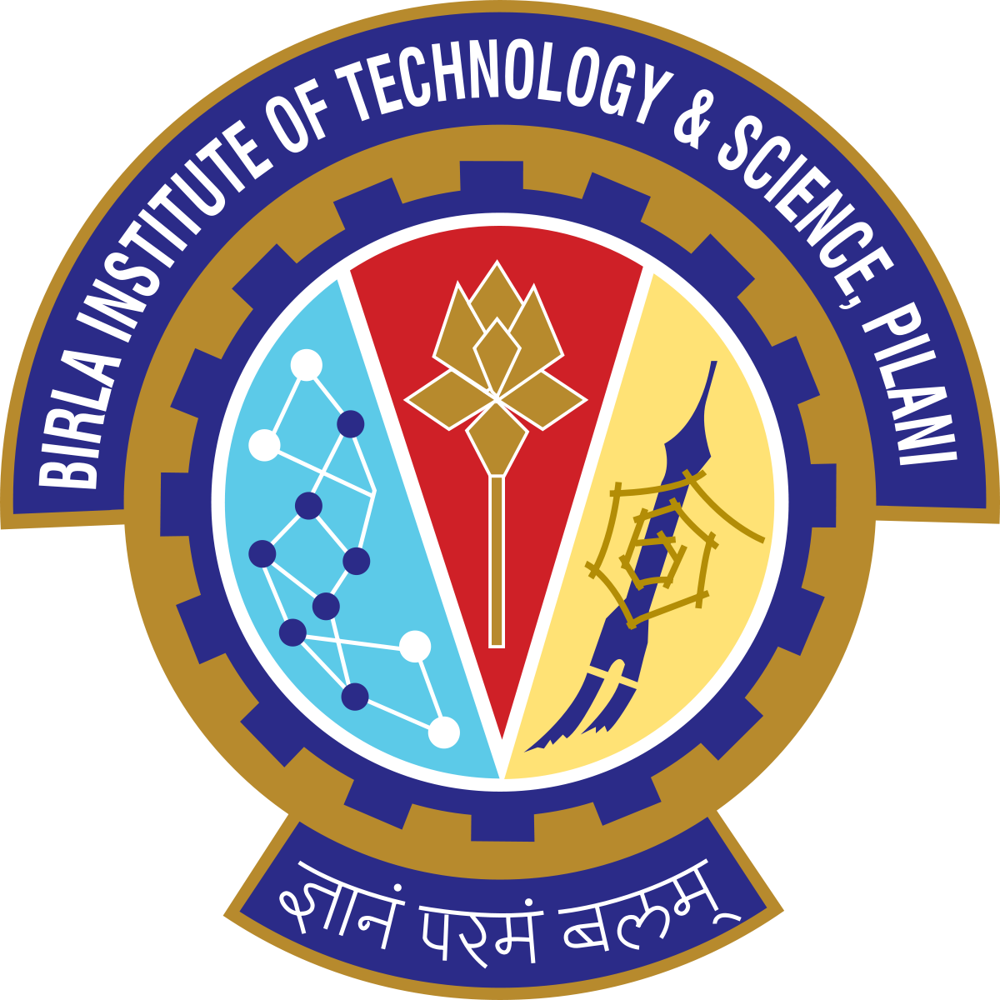

Georgia Institute of Technology
M.S. in Computer Science
Machine Learning and Computing Systems
Atlanta, GA · Aug 2019 – Dec 2020
Software engineering · Applied machine learning · Cryptanalysis
I am a Senior Member of Technical Staff at Salesforce. I build software that helps engineers understand why tests fail, find relevant fixes, and automate parts of the debugging process.
My career brings together software engineering and applied machine learning. At Salesforce, I have designed AI agents for test investigation and resolution, built recommendation services, and improved the data pipelines behind these systems. Earlier, I worked on cryptanalysis at the Indian Statistical Institute and Nanyang Technological University.
I earned my M.S. in Computer Science at Georgia Tech, following dual degrees in Computer Science and Mathematics at BITS Pilani.
San Francisco · Jan 2021 – Present
My work focuses on developer productivity: helping engineers investigate failing tests, identify the changes responsible, and find or apply a fix. I work on the agents, recommendation models, backend services, and data pipelines that make this possible.
I designed and scaled an agent that diagnoses test failures and uses similar historical failures and fixes to guide resolution. I integrated Sentence-BERT embeddings with Vertex AI Vector Search; the resulting system achieved 50% automated resolution accuracy.
I combined DBSCAN clustering, XGBoost, and LLM explanations to help engineers investigate failures and identify the pull requests likely to have caused them. The system achieved 70% assignment accuracy, reduced mean time to resolution by 20%, and saved more than 1,000 engineering hours annually.
I designed and deployed a recommendation service using natural-language features to find relevant results for engineers. I improved recall by 17 percentage points and reduced prediction time from 10 minutes to seconds, with support for real-time inference, batch predictions, and daily retraining.
I developed more than 10 ML features, including signals derived from abstract syntax trees, and built a file-mapping pipeline to address recurring failures. I also used LLMs to remove redundant stacktrace information while retaining useful debugging signals, reducing stacktrace volume by 96%.
I reduced feature-ingestion time from two weeks to two days and cut CPU usage by 97% by switching to batch prediction. I also optimized a feature pipeline to run four times faster with a substantially smaller memory footprint.
I built and owned company-wide test-information and predictive-performance dashboards, including a Test Debug View for searching and analyzing stacktraces. These tools help engineers investigate failures and assess recommendation performance.
May 2020 – Aug 2020
I migrated services to a new Test Inventory service to improve reliability.
Backend and data: Java, Python, SQL, Spring Boot, REST APIs, Kafka, BigQuery, Elasticsearch.
Machine learning: Sentence-BERT, Vertex AI, XGBoost, PyTorch, TensorFlow, scikit-learn, Hugging Face, FAISS.
Infrastructure: AWS, GCP, Docker, Kubernetes, Jenkins, Terraform.
M.S. in Computer Science
Machine Learning and Computing Systems
Atlanta, GA · Aug 2019 – Dec 2020

B.E. (Hons.) in Computer Science
M.Sc. (Hons.) in Mathematics
Goa, India · Aug 2014 – May 2019
I worked on cryptography and cryptanalysis at the Indian Statistical Institute (ISI), Kolkata, and Nanyang Technological University (NTU), Singapore, including a year-long undergraduate thesis at ISI. My work studied how fault attacks, side-channel attacks, and time-memory-data tradeoffs can expose weaknesses in stream and block ciphers. I also applied machine learning to the problem of identifying fault locations in a cipher.
11 research papers in international conferences and journals; reviewer for 10+ IEEE submissions.
Built models to classify English accents using K-means, convolutional neural networks, and bidirectional LSTMs.
Developed a method for selecting video thumbnails using visual aesthetics and relevance features, clustering, and random forests.
Developed a trip-planning algorithm to find suitable Airbnb accommodation and a travel plan for a given set of preferences.
Implemented facial recognition with FaceNet and privacy-preserving biometric authentication, designed to keep client information private from the server.
Applied artificial neural networks to identify fault locations in stream ciphers.
Built a JavaScript browser extension that enables keyboard-only web navigation, with accessibility in mind.